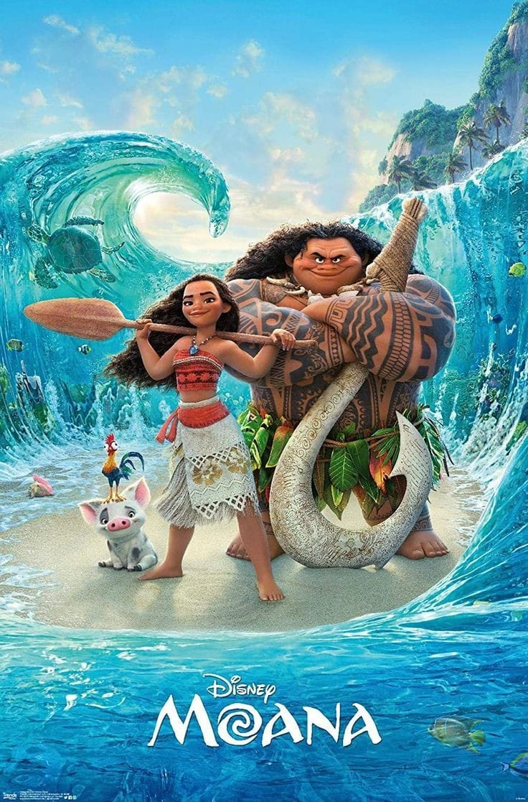
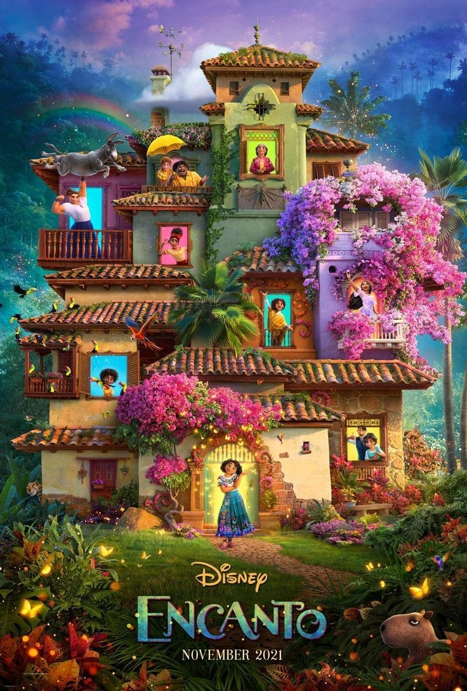
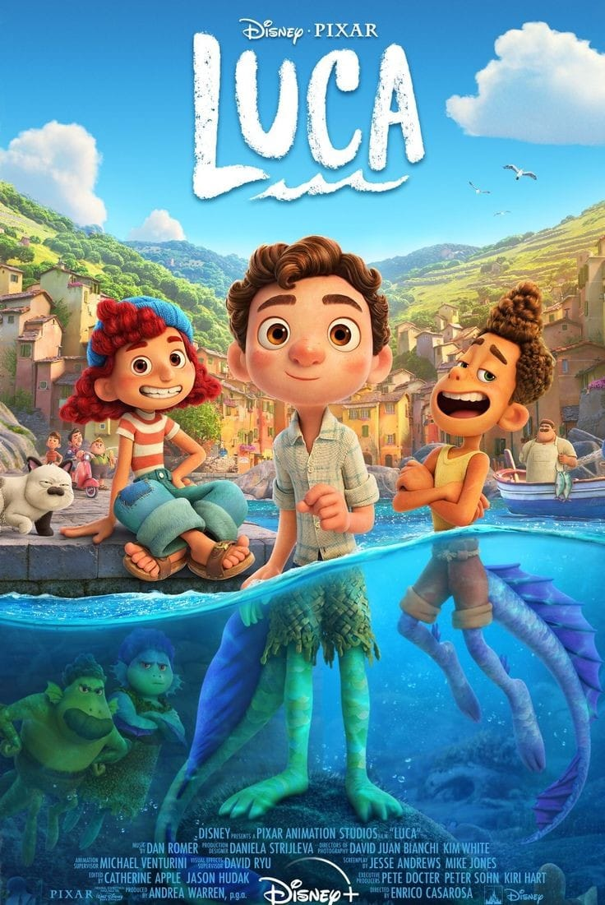
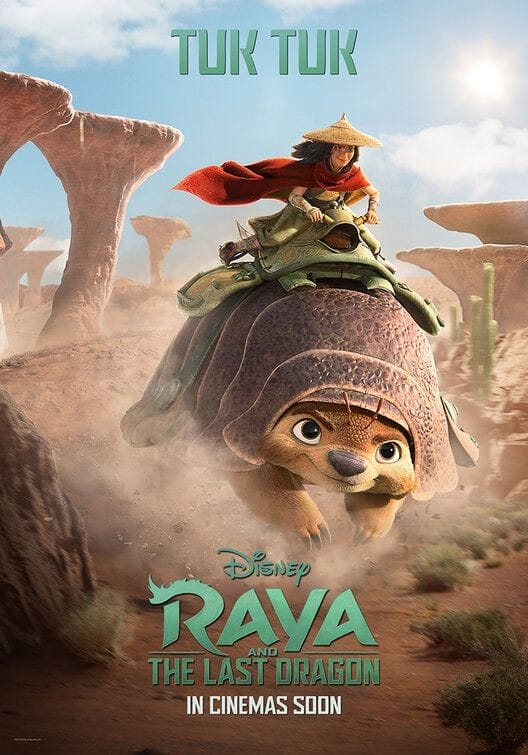
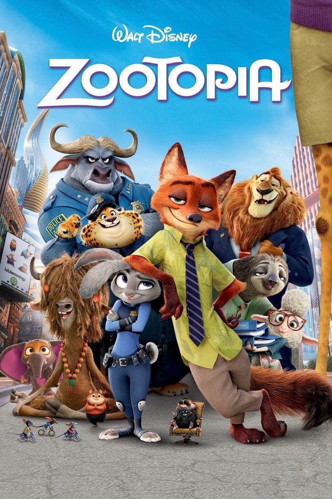

Moana

Seorang remaja perempuan bernama Moana memutuskan untuk pergi berpetualang dengan berlayar untuk menyelamatkan bangsanya. Dalam perjalanan, ia bertemu dengan Dewa Maui yang membantunya untuk mencari jalan. Bersama-sama mereka berlayar melintasi lautan menghadapi monster- monster besar dan bahaya sepanjang jalan untuk pencarian kuno leluhurnya.
Encanto

Encanto bercerita tentang keluarga Madrigal, sebuah keluarga yang tinggal di rumah ajaib dan tersembunyi di pegunungan Kolombia, tepatnya di Encanto. Keajaiban Encanto membuat seluruh anggota keluarganya memiliki kemampuan yang spesial, kecuali Mirabel. Namun suatu hari saat Encanto mulai terancam, harapan terakhir untuk dapat menyelamatkannya hanya ada di tangan Mirabel. Detikers bisa menonton film ini jika penasaran dengan cara Mirabel untuk menyelamatkan Encanto.
Luca

Film Luca merupakan sebuah pertualangan seekor monster laut yang penasaran dengan dunia di atas laut yaitu daratan. Luca tanpa sengaaja bertemu dengan seorang teman baru bernama Alberto, teman baru luca mengajak dan mengenalkan kepada luca apa yang ada diluar sana. Rasa penasaran Luca pun mulai semakin memuncak melihat sebuah pemukiman manusia diseberang pulau yang ia tempati bersama Alberto.
Raya and the Last Dragon

Monster jahat dikenal sebagai Druun masyarakat daratan. Para naga mengorbankan diri mereka untuk menyelamatkan manusia. 500 tahun kemudian Druun masih tetap menghantui manusia. Raya adalah anak dari seorang raja. la mencari cara untuk menyelamatkan manusia dan menghentikan Druun. Raya mencari naga terakhir yang disebut-sebut bisa membantunya menyelamatkan dunia.
Zootopia

Film ini bercerita tentang Judy Hopps, seekor polisi kelinci wanita yang ingin mengungkapkan suatu konspirasi kejahatan bersama dengan Nick Wilde, seekor rubah penjahat. Film animasi Zootopia memiliki tokoh- tokoh berupa hewan yang sangat menggemaskan dan lucu, sehingga dapat menghibur penontonnya.